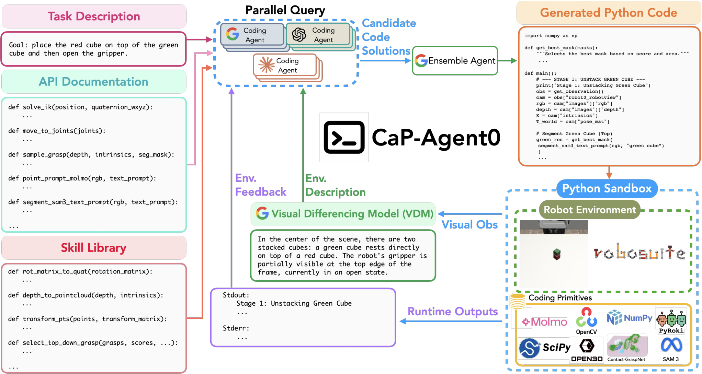

CaP-X
评价机器人 Coding Agent，必须同时说清 API 有多强、感知有多准、允许调试多少次。
CaP-X: A Framework for Benchmarking and Improving Coding Agents for Robot Manipulation
CaP-RL 的真实 Franka 抓取成功率：24% → 84%；但训练使用 S1 特权状态 API，不能混同所有评测层级。
01这篇要解决什么？
两个方法都声称“用代码控制机器人”，难度可能完全不同：一个调用 pick(object)，另一个必须从 RGB-D 定位物体、算位姿、控制夹爪。CaP-X 提供环境、分层基准、Agent0 和 RL 后训练方法，把这些条件拆开测。
02先看一个场景
同一句“把蓝色方块放到黄色方块上面”，可以是两种难度完全不同的题：一种能直接调 pick(object)，另一种必须自己从 RGB-D 定位物体、算位姿、控制夹爪。两篇论文都说“用代码控制机器人”，成绩却可能根本不可比。
03方法怎样运转？

- 01
CaP-Gym：把仿真器包成 REPL，原语做成无状态服务
环境层建在标准 Gymnasium 接口上，把底层模拟器（Robosuite、LIBERO-PRO、BEHAVIOR）的原生动力学保留下来，再以读—求值—打印循环（REPL）的方式暴露给 Coding Agent。一个“回合”(turn) 的定义很具体：Agent 收到观测、生成一段 Python 程序、环境把这段程序执行到底；程序内部可以多次调用感知与控制原语，每次原语调用又会驱动模拟器或真机控制器跑很多内部步。所有计算密集的原语都被实现成无状态服务，因此能做高吞吐的并行评测。
- 02
原语本身来自现成模型：SAM3、Molmo 2、PyRoki
感知原语负责把原始传感数据抽象成结构化语义对象：语言条件分割用 SAM3，开放词表指点用 Molmo 2，此外还有 OpenCV 与 Open3D 这类标准视觉库。控制原语不让 Agent 直接发关节空间命令，而是调用运动规划器或逆运动学求解器（PyRoki），由控制器负责碰撞检查、可达性约束与动作空间变换，Agent 因此可以在任务导向的笛卡尔空间里推理。这些都是现成组件，CaP-X 不训练它们；被评测的对象是“怎么把它们组装成一段程序”。
- 03
分层怎么定义：三条轴切出八个层级
S1–S4 是单轮，M1–M4 允许多轮，三条轴分别是感知条件、原语抽象度、以及迭代与 grounding 方式。S1 用无噪声的仿真真值（掩码与物体位姿）配高层原语，作用是把高层规划与感知噪声分开，给出一条推理上界；S2 换成真实感知模块处理 RGB-D，仍用高层原语，这是多数既有工作的默认设置；S3 把人设计的高层原语拆回底层原语（solve_ik()、sam3_text_prompt() 这类直接来自各个包 API 的接口），文档里保留用法示例；S4 连示例也去掉，只留函数签名与 docstring。多轮侧，M1 回传 Python 沙箱的 stdout 与 stderr，M2 在此之上额外回传原始 RGB，M3 换成视觉差分模块（VDM），M4 则是 M3 的 VDM 配 S3 的底层原语与示例。
- 04
调试预算怎么定义：Pass@1，且一次 trial 内绝不重置环境
评测协议是 zero-shot Pass@1。一次 trial 内 Agent 可以只跑一轮，也可以多轮——边看执行反馈边改代码、边补探测语句——但环境在这个 trial 内永远不重置，物理后果会累积，不能靠“重开一局”刷成功率。论文没有给出统一的回合数上限，而是改报平均耗时：Gemini-3-Pro 做方块堆叠时，S1 单次 trial 约 12.9 秒，S3 约 28.4 秒，M1 约 60.8 秒，M3 约 113.6 秒。人类参考线也不是一次写成的：7 位作者在每个层级用与模型完全相同的 API 写单个 Python 脚本，反复读执行轨迹、改 bug，直到单轮平均成功率 88.5%；简单抓放任务几小时能到位，接触密集与双臂任务每项花了 2–3 周。
- 05
CaP-Agent0 不训练，CaP-RL 才训练
CaP-Agent0 是 training-free 的外壳，只做三件事：把 VDM 转出的结构化文字当作每轮观测；带一个自动合成、跨 trial 持久的技能库——做法是把 12 个模型在 7 个 Robosuite 任务上所有成功的 S3 轨迹汇总，用正则抽出函数定义，再让 Gemini-3-Pro 找出高频且与任务无关的逻辑，最终得到 9 个经验证的通用函数；以及并行推理，每轮采 9 个候选（单模型是 Gemini-3-Pro 用 0.1 到 0.9 九档温度，多模型是 Gemini-3-Pro、Claude Opus 4.5、GPT-5.2 各 3 次），再由一个中心 Agent 把候选合成最终代码。CaP-RL 走的是另一条路：用 GRPO 对 Qwen2.5-Coder-7B-Instruct 做可验证奖励的强化学习后训练，每个任务训 50 轮；并且刻意选 S1 的特权状态 API 训练，以避开 S2 中感知与控制误差叠加造成的奖励噪声和信用分配歧义。
# 一个评测配置 = 感知条件 × 原语抽象 × 是否给用法示例 × 反馈形态
tier = (perception, primitives, examples, feedback) # S1..S4 单轮；M1..M4 多轮
env = CaP_Gym(sim = Robosuite | LIBERO-PRO | BEHAVIOR) # 原语为无状态服务
obs = env.reset() # 一次 trial 内此后不再 reset
while not done: # 每个 turn 交出一整段 Python
cands = [model.write(obs, tier, skill_lib) for _ in range(9)] # 并行采样
code = ensemble.synthesize(cands)
stdout, stderr, imgs = env.execute(code) # 程序内部调 SAM3 / Molmo2 / PyRoki
obs = stdout + stderr + VDM(前一帧, 当前帧, 任务) # M3/M4：视觉→结构化文字
done = 目标达成 or 触及回合与时间预算
record(success, turns, wall_time, tokens) # Pass@1 必须连预算一起报方法与结果的原文定位见本页引用。
04跟着这个场景走一遍
教学推演：回到上面的场景。第一步，这句话进入 CaP-Gym 后，Agent 拿到的是一次 turn 的观测，它要交出一整段 Python，而不是一个动作；程序跑完才算一个回合，中途的所有物理后果都留在环境里。第二步，这段程序能调什么决定了难度上限：调 SAM3 拿蓝块掩码、调 Molmo 2 指点、调 PyRoki 解 IK，都只是把可达性和碰撞检查交出去，“抬到上方—对准—下降—松爪”的结构仍要 Agent 自己写出来。第三步，同一句指令在 S1 下拿到的是仿真真值位姿加一个封装好的高层原语，几行就写完；在 S4 下没有用法示例，只有函数签名与 docstring。两种成绩若直接并列，比的是 API 封装度而不是推理能力——论文图 3 画的正是抽象度越高成功率越高的那条单调曲线。第四步，若允许多轮，Agent 第一次把方块碰倒了，环境不会重置，它下一轮面对的是倒着的方块，要么插打印语句确认高度差、要么重新采样抓取位姿。这就是“调试预算必须和成功率一起报”的原因：人类专家的 88.5% 背后是离线反复迭代（接触密集任务每项 2–3 周），而 CaP-Agent0 一次 trial 只有约两分钟。第五步，CaP-Agent0 把这些机制全用上——VDM 把“蓝块现在歪了”写成文字、技能库里已有旋转矩阵转四元数一类现成工具函数、九路候选合成一份代码，结果是它在 7 项任务的 4 项上达到或超过人类的单轮代码。这里最该记住的是 M2 那个反直觉结果：把原始 RGB 直接塞回上下文，反而不如纯文本反馈的 M1，只有把视觉变成结构化文字的 M3 才稳定更好。多给一个模态不等于多给了有用信息，这一条在读后面那些沿用同名基准的论文时尤其要带着。
05实验到底表现怎样？
CaP-Gym 含更广任务集合；核心 CaP-Bench 用 7 项任务研究 12 个模型及不同接口条件。下表是论文 §5 的独立 CaP-RL 实验：Qwen2.5-Coder-7B 在 3 项任务训练，仿真每项 100 次、真实 Franka 每项 25 次。
作者报告的实验结果 · v2
| 表 4 任务 | 基础 Qwen 7B | CaP-RL 后 | 人工专家 |
|---|---|---|---|
| 仿真抓取 | 25% | 80% | 93% |
| 仿真堆叠 | 4% | 44% | 73% |
| 真实抓取 | 24% | 84% | 92% |
| 真实堆叠 | 12% | 76% | 84% |
原始证据：分层定义与发现：§3 / 表 1 ↗ · Agent0：§4 ↗ · CaP-RL：§5 / 表 4 ↗ · 预算与人工参考：附录 K ↗
训练可以显著改善指定任务上的代码控制，但这张表不能证明基准中的每项任务、每种感知层级都得到同等提升。真实堆叠仍低于人工专家，仿真堆叠差距更大。
06收益来自哪里，又停在哪里？
消融与机制证据
§3.3 的分层实验发现，直接加入 RGB 的 M2 并未稳定优于文本反馈，视觉差分 M3 更有效。更多模态不自动等于更好；反馈必须能帮助定位代码与物理变化之间的关系。
结论的适用边界
这篇的模型来源格外需要拆开看：被评的 12 个前沿模型、做 VDM 的 Gemini-3-Pro、感知原语 SAM3 与 Molmo 2、控制原语 PyRoki 全是现成组件，CaP-Agent0 是完全 training-free 的外壳，连技能库那 9 个函数也是从已有成功轨迹里抽出来的，不是新训练的模块；真正由作者训练的只有 CaP-RL 一条线——在 Qwen2.5-Coder-7B-Instruct 上用 GRPO 后训练，而且是在 S1 特权状态 API 下训的。所以表 4 的 24% → 84% 是“训一个小代码模型 + 特权 API”的结果，CaP-Agent0 接近人类的那部分成绩则来自推理时算力（九路采样、多轮、VDM），两者成本结构完全不同，不能合并成一句“CaP-X 让机器人写代码更强了”。VDM 用的是当时最强的 VLM，论文明说这是为了给“语言化感知”的效果取上界，换弱一点的 backbone 结论可能变。人类参考程序也经历过调试，模型的单轮 Pass@1 是另一种开发成本；附录 K 显示平均试验时长随多轮机制显著增长，比较成功率时必须同时报预算。
07放回全书的脉络
它是读 ASPIRE、Playful 和 Harness VLA 的评测尺子。后续论文即使用同一个 LIBERO-Pro 名字，也可能使用不同任务范围、seed、工具和探索预算。
08把阅读变成一个小研究
为自己的方法填写一张评测契约：输入、可用 API、reset 权限、训练 / 调试 seed、每任务调用预算、成功判据。
先自己回答：这项实验怎样才有解释力？
先保证对照在这些条件上可比，再讨论方法收益。否则实验可能测到“谁获得了更多信息或更多尝试”，而非你想研究的机制。
- 用自己的话说出这篇改变了哪个模块。
- 画出它的输入、输出和一次失败如何被处理。
- 复述一个结果，同时说清基线、指标与实验条件。这一问不给答案，材料在第 05 节。
先自己答，再看前两问的参考答案
这篇改了哪个模块这篇改的是评测协议本身，不是又提出一个更强的机器人系统：它把“用代码控制机器人”拆成三条可以分别拨动的轴——观测是无噪声的仿真真值还是真实感知模块处理的 RGB-D、原语是人设计的高层宏还是各个包的底层 API、以及允不允许多轮迭代与用什么形态回传反馈——由此切出 S1 到 S4 与 M1 到 M4 八个层级，并把评分规定成 Pass@1、一次 trial 内绝不重置环境。它不训练感知与控制原语，SAM3、Molmo 2 与 PyRoki 都是现成的，仿真器的原生动力学被保留，也没有提出新的控制器；CaP-Agent0 完全 training-free，连技能库里那批通用函数都是从已有成功轨迹里抽出来的。唯一动过权重的是 CaP-RL 那条线，而它刻意选在 S1 的特权状态 API 下训练，所以它证明的事情和层级表想说清的事情并不是同一件。
输入、输出与一次失败如何被处理被评对象每次拿到的是一次 turn 的观测，具体内容由层级决定：S1 给仿真真值的掩码与物体位姿配高层原语，S2 起换成真实感知模块处理的 RGB-D，S3 把原语拆回底层 API 但保留用法示例，S4 连示例也去掉、只留函数签名与 docstring；多轮侧再叠反馈形态，M1 回传沙箱的 stdout 与 stderr，M2 在此之上加原始 RGB，M3 换成 VDM 把前后帧差异写成结构化文字，CaP-Agent0 另有一份跨 trial 持久的技能库一并进上下文。输出不是一个动作，而是一整段 Python 程序，交给 CaP-Gym 的 REPL 执行到底；程序内部可以多次调用感知与控制原语，每次原语调用又驱动模拟器或真机控制器跑很多内部步，因此一个回合的边界是“这段程序跑完”。一次失败没有复位这条退路，环境在同一个 trial 内永远不重置，把方块碰倒了下一轮面对的就是倒着的方块，Agent 只能从回传的反馈里读出出了什么事，再插打印语句确认或重新采样抓取位姿，不能靠重开一局刷成绩。判成败的是基准自带的成功判据，这一层是外部的；但 Agent 在环内对“做成了没有”的判断完全依赖反馈形态，M3 与 M4 里这个判断出自 VDM 背后的 VLM，而把原始 RGB 直接塞回上下文的 M2 反而不如纯文本的 M1。
评价机器人 Coding Agent，必须同时说清 API 有多强、感知有多准、允许调试多少次。
↗带着位置回到原文
首发日期用于时间排序；以下方法与结果对应 v2。数据为论文作者报告，本讲义没有独立复现实验。
QA就这一页提问或讨论
对某个数字、某条边界或某个推演有疑问，欢迎直接留言：讨论按页面分开，回复会保留在 XinrunXu/awesome-agentic-robotics-papers 的 Discussions 里，需要一个 GitHub 账号。